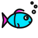

Chat Aquarium
A little pixel-art fish tank along the bottom of your stream, and everyone who chats gets a fish. A new
chatter's fish drops in with a splash, then swims about among the seaweed, the rocks and the coral,
blowing bubbles and now and then leaping out of the water. When they chat again, their fish darts about
and what they said pops up in a speech bubble over it. !feed sprinkles in fish food, and
every fish nearby races for it. Chatters who go quiet for a while swim off the side.
The real overlay with pretend chatters (muted, and with a deeper tank than usual so you can see it here). On stream the tank takes the bottom 10% of the screen and the rest is transparent.
Setup guide
Get it on stream
-
Add a Browser source
In OBS click + under Sources → Browser. Paste
https://aquarium.ixitxachitl.com/as the URL and set it to your full canvas size, usually1920×1080. The background is transparent automatically, and the tank fills the bottom 10% of the screen (see Tank height and Tank width to change that). - Connect your chat Right-click the source → Interact, move your mouse over the overlay and click the yellow gear in the bottom-right corner. Type your Twitch and/or Kick channel name, add TikTok or YouTube if you stream there, and press Save & apply.
- Try it Add test fish in the settings drops a few pretend chatters in. The bar next to the gear adds a fish by name, feeds them, or empties the tank.
-
Let chat swim
Anyone who chats gets a fish, and
!feedfeeds them all.
Chat commands
- Anything: a chatter's first message drops their fish into the tank. After that, every message makes it dart about and blow bubbles (or leap, if it's near the top), with what they said in a speech bubble.
!feed: sprinkles fish food in, and every fish nearby races for it. There's a cooldown (30 seconds by default) that you and your mods skip.- A fish swims off once its chatter has been quiet for 20 minutes. When the tank holds 40 fish, the quietest one leaves to make room. Both are in the settings.
- Nightbot, StreamElements and the other usual bots never get a fish. Add anyone else to No fish for.
Chat sources
Twitch & Kick
Just type the channel name. Chat is read anonymously, so there's no login, bot account or app to set up. Each fish is its chatter's chat color, and mods are recognised by their badges.
TikTok
TikTok needs a bridge app running on your PC. If you use TikFinity, just type
1 in the TikTok box. Otherwise, paste your bridge's ws://… address.
YouTube
Paste your live stream's video ID or link, plus a YouTube Data API v3 key from the
Google Cloud Console. You can also give a bridge ws://… address instead.
What you'll see
- A low-res pixel-art tank: sand, rocks, swaying seaweed, coral, an air stone that never stops bubbling, and a treasure chest that pops open now and then. The water is see-through blue with shafts of light and a rippling surface. Everything is a full 3D voxel model seen flat on, so it looks like 2D pixel art, with just the sand showing some depth.
- A fish for every chatter in their chat color, with their name over it. The same chatter always gets the same fish: plain, round, angelfish, long or puffer, with its own fins and stripes or spots. Fish turn round in 3D, so you see their faces as they turn.
- Speech bubbles with what they said (commands don't show). Names can also show only for a moment when they chat, or not at all.
- Sound effects made on the fly: a plop when a fish arrives, splashes, bubbles and nibbles. They're quiet by default; turn them down or off in the settings.
Build a setup link
Settings in the URL
Every setting can also go in the URL, and it overrides what's saved. That's handy for setting up without the Interact window. (The overlay's own Copy setup link button does the same thing.) Fill in what you need and paste the link into your browser source:
ytkey works as a URL parameter too.)
All settings
| Setting | URL parameter | Default | What it does |
|---|---|---|---|
| Chat | |||
| Twitch channel | channel | — | Read anonymously, no login needed. |
| Kick channel | kick | — | Read anonymously, no login needed. |
| TikTok bridge | tiktok | — | 1 uses TikFinity on this PC, or give a ws://… bridge address. |
| YouTube live | youtube | — | Live video ID or link (needs the API key), or a bridge address. |
| YouTube API key | ytkey | — | A YouTube Data API v3 key from the Google Cloud Console. |
| YouTube check every (s) | ytpoll | 6 | Lower is snappier, but uses the daily API quota faster. |
| Demo chat | demo | off | Pretend chatters swim in and chat, for trying it out. |
| Fish | |||
| Swims off after (minutes quiet) | stay | 20 | A chatter's fish swims off once they've been quiet this long. 0 keeps every fish until the source reloads. |
| Most fish at once | max | 40 | When the tank's full, the fish whose chatter has been quiet longest swims off to make room. |
| Names | names | always | always over every fish, chat for a few seconds when they chat, or never. |
| Chat in speech bubbles | say | on | What they say pops up over their fish for a few seconds. Commands (!…) don't. |
| No fish for | skip | the usual bots | Names that never get a fish, comma separated. Starts with Nightbot, StreamElements, Streamlabs, Moobot, Fossabot, WizeBot, Sery_Bot, Botrix, Ko-fi's bot and SoundAlerts. |
| Feeding | |||
| Feed command | feed | !feed | Sprinkles fish food in. Leave it empty to turn feeding off. |
| Feeding cooldown (s) | feedcd | 30 | How long until the next feeding. The broadcaster and mods skip it. |
| Look | |||
| Tank height (% of the screen) | height | 10 | How much of the bottom of the screen is water. A taller tank gives the fish more room. |
| Tank width (% of the screen) | width | 100 | A narrower tank sits in the middle. |
| Pixel size | pixel | 0 | Screen pixels per art pixel: bigger is chunkier. 0 picks one from the source's height (5 at 1080p). |
| Water tint | water | 35 | 0 to 90: 0 is clear water, higher is bluer. |
| Sound effects volume | volume | 30 | 0 to 100; 0 is silent. |
| Background (testing) | bg | auto | In a normal browser the overlay shows a dark background so you can see it. bg=none makes it transparent anyway, or give a color like bg=black. In OBS it's always transparent unless you set a color. |
window.aquarium.add("name", { color: "#ff7f50", text: "hi!" }),
window.aquarium.feed(), window.aquarium.remove("name") and window.aquarium.clear().